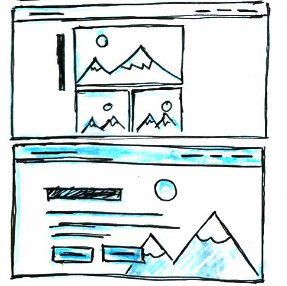

Building a Better Portfolio
Project Documentaion
I order to make my site more responsive, usable, and proffesionaly built I chose to rebuild my portfolio for the final project
Identifying Users
I anticipate several types of users coming to my site. First and foremost the site is a place for employers to come and see my work. Secondly I expect my peers and colleagues to view my site for inspiration or information. Lastly my site will be a place for Online collaborators to find content projects I have created for the design community.
Design
For the design I wanted to create something that was simple, responsive, and focused on the content. To achieve this I chose to work mostly with black, white, and a blue accent color, making sure to leave lots of whitespace. I made use of large changing images for headers to draw interest in projects quickly


Sources Technology
One of the key technologies I used throughout the site was jQuery. I used jQuery to handle most of the interactive enhancements to the site such as having the nav bar change when you scroll or having a button appear at the bottom of the viewport that returns the user to the top of the page
Another Technology I used was webp images. This tech is a new image file format by google that is signifigantly smaller than jpgs but look better. Unfortunatily this technology is not fully supported across all common browsers so I needed to use source set and the JS library Modernize to serve jpgs as fallbacks.
Additional Resources
Stock Photos by Helloquence and Dai Ke on Unsplash
pdftohtml.net for their conversion tool
Modified code snippet for Nav and image Carousals by w3schools
Changes From Original
The difference between this project and project 2 are that I have rebuilt the site using grid and flexbox to make everything scale more smoothly too mobile. In addition I am now using JS and jQuery to add interactive elemts to the project that enhance the user experiance. I have also begun to consider how I serve optomized responsive images using webp and Modernizer. My new solution is more robust and usable and is handled better by different browsers and viewport sizes.